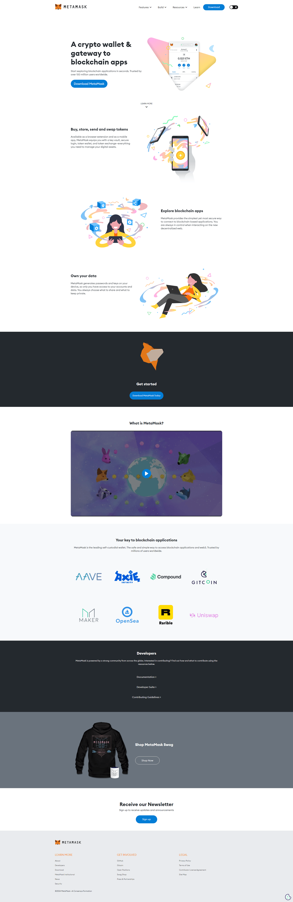

Download MetaMask: The Premier Blockchain Wallet App
The MetaMask Extension is a game-changer for anyone looking to delve into the world of cryptocurrency and decentralized applications (DApps). This browser extension provides a secure and intuitive platform to manage digital assets and interact with the Ethereum blockchain right from your web browser.Installing the MetaMask Extension is quick and straightforward. Available for browsers like Chrome, Firefox, and Edge, you can easily download and install the extension from their respective web stores. Once installed, you can set up a new wallet or import an existing one using a recovery seed phrase, ensuring that your private keys are securely stored on your device.MetaMask supports a broad array of Ethereum-based tokens, including ERC-20 and ERC-721 tokens, making it versatile for managing diverse cryptocurrency portfolios. The user-friendly interface allows you to send and receive cryptocurrencies, view transaction histories, and monitor account balances with ease.
One of MetaMask's standout features is its seamless integration with DApps. With a few clicks, users can connect their wallet to decentralized exchanges, NFT marketplaces, and other DApps, making it simple to participate in the decentralized finance (DeFi) ecosystem. This functionality streamlines trading, earning interest, and collecting NFTs directly from your browser.Security is a top priority for MetaMask. The extension supports hardware wallet integration, biometric authentication, and passphrase protection, adding multiple layers of security to safeguard your assets.In summary, the MetaMask Extension combines ease of use, robust security, and comprehensive functionality, making it an essential tool for anyone involved in the crypto space. Whether managing digital assets, trading on decentralized exchanges, or exploring DApps, MetaMask offers a secure and efficient gateway to the decentralized web.